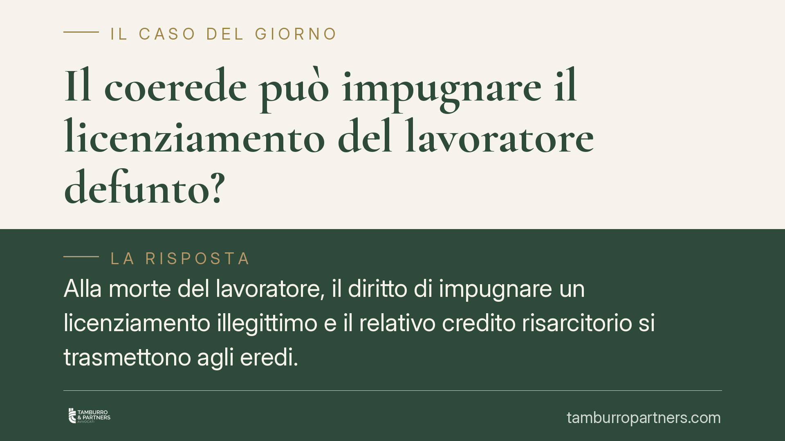

Il coerede può impugnare il licenziamento del lavoratore defunto?
Alla morte del lavoratore, il diritto di impugnare un licenziamento illegittimo e il relativo credito risarcitorio si trasmettono agli eredi. Ma può un solo coerede agire per l'intero? La questione intreccia il termine di decadenza previsto dalla legge sui licenziamenti e le regole della comunione ereditaria. Distinguere i due piani è essenziale per non confondere legittimazione ad agire e riparto del credito.

Il caso
Un lavoratore viene licenziato per motivi disciplinari. Prima che la controversia si definisca, muore. Uno solo dei suoi eredi decide di proseguire l'azione: impugna il licenziamento e chiede l'accertamento della sua illegittimità. Si pongono due interrogativi.
Il primo è lavoristico: il licenziamento è legittimo? Il secondo è successorio: un coerede può agire da solo e, in caso di vittoria, riscuotere l'intera indennità, oppure la sua legittimazione è limitata alla propria quota?
La vicenda è utile per illustrare come si combinino due discipline distinte. Va precisato che gli estremi esatti della pronuncia richiamata dalla fonte divulgativa non risultano compiutamente verificabili; ci limitiamo quindi ai principi generali, che restano validi a prescindere dal singolo precedente.
Inquadramento normativo
Il versante lavoristico. Il licenziamento va impugnato, a pena di decadenza, nel termine di sessanta giorni dalla comunicazione (art. 6, L. 604/1966), con successivo termine per il deposito del ricorso giudiziale. La decadenza segue regole proprie, dettate dagli artt. 2964 e seguenti del codice civile. È un punto da tenere fermo: la decadenza non è la prescrizione. Le norme che disciplinano l'interruzione della prescrizione tra concreditori solidali (come l'art. 1310 c.c.) non si estendono al termine decadenziale di impugnazione. Ne consegue che l'impugnazione tempestiva proposta da un coerede giova, sul piano della tempestività, a chi l'ha proposta: non produce automaticamente effetti per gli altri, che dovranno attivarsi nei termini se intendono partecipare all'azione.
Il versante successorio. Alla morte del lavoratore il credito risarcitorio (o l'indennità sostitutiva) cade in successione. Occorre allora qualificarne la natura. Se il credito è divisibile, ciascun coerede può pretendere soltanto la propria quota, in proporzione alla porzione ereditaria (art. 1314 c.c.). Se invece il credito è indivisibile, uno solo dei concreditori può esigere l'intera prestazione (art. 1319 c.c.), salvo l'obbligo di rendere conto agli altri e ripartire quanto riscosso.
È questa la chiave di lettura corretta: non la solidarietà, ma la divisibilità o indivisibilità del credito. Un credito pecuniario, per sua natura, tende a essere divisibile; sarà il concreto atteggiarsi del titolo a orientare la qualificazione. Gli artt. 727 e 757 c.c. rilevano su un piano ulteriore: la divisione ereditaria ha effetto retroattivo, sicché ogni coerede è considerato titolare fin dall'apertura della successione dei beni assegnatigli. Questo incide sul riparto finale, non sulla legittimazione a impugnare.
Implicazioni pratiche
Per chi eredita da un lavoratore licenziato, la lezione è duplice.
Sul piano dell'azione, il coerede attivo tutela anzitutto sé stesso. La sua impugnazione tempestiva non mette al riparo dalla decadenza gli altri coeredi, che restano onerati di agire nei termini. Chi resta inerte rischia di perdere ogni pretesa.
Sul piano del credito, se il coerede riscuote l'intera indennità (ipotesi possibile ove il credito sia indivisibile), non ne diventa proprietario esclusivo: è tenuto al rendiconto e alla ripartizione secondo le quote ereditarie.
Sul merito del licenziamento resta centrale il principio di proporzionalità: la sanzione espulsiva deve essere adeguata alla gravità concreta del fatto contestato. Una condotta di modesto rilievo non giustifica il licenziamento, che in tal caso è illegittimo per sproporzione.
Cosa fare in concreto
- Verificare i termini di decadenza. Individuare la data di comunicazione del licenziamento e calcolare i sessanta giorni per l'impugnazione stragiudiziale, oltre al successivo termine per il ricorso.
- Attivare tutti i coeredi. Ciascuno interessato deve impugnare tempestivamente: l'azione di uno solo non salva gli altri dalla decadenza.
- Qualificare il credito. Accertare se l'indennità sia divisibile (riscossione pro quota) o indivisibile (legittimazione all'intero con obbligo di riparto).
- Documentare l'eventuale riscossione integrale. Chi incassa l'intero deve predisporre un rendiconto verso gli altri coeredi ed eseguire la ripartizione.
- Valutare la proporzionalità. Raccogliere la contestazione disciplinare e ogni elemento utile a dimostrare l'eventuale sproporzione della sanzione.
Conclusioni
La vicenda mostra come profili lavoristici e successori vadano tenuti distinti. La decadenza dall'impugnazione ha natura personale e non si estende automaticamente ai coeredi; il credito, invece, segue le regole della comunione ereditaria, con la divisibilità o indivisibilità a determinare chi può esigere cosa. È opportuno, in presenza di più eredi, coordinare l'azione fin dall'inizio, per evitare che l'inerzia di alcuni pregiudichi diritti recuperabili.
Contributo informativo a cura di Tamburro & Partners - Avv. Giuseppe Tamburro. Non costituisce parere legale.
Ogni storia di lavoro ha i suoi tempi.
Se gestisci HR e vuoi un confronto su contenzioso, ispezioni o licenziamenti, scrivi allo studio. Ti rispondiamo entro un giorno lavorativo.